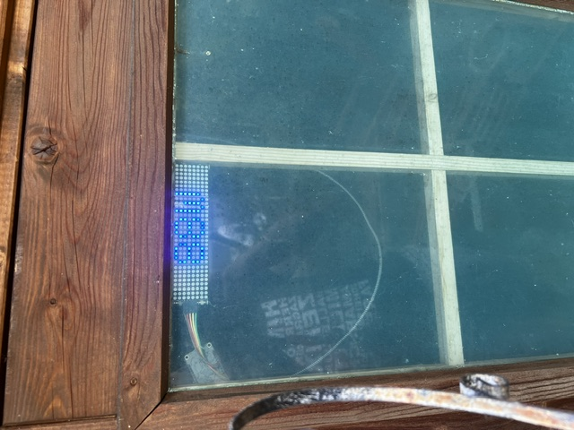
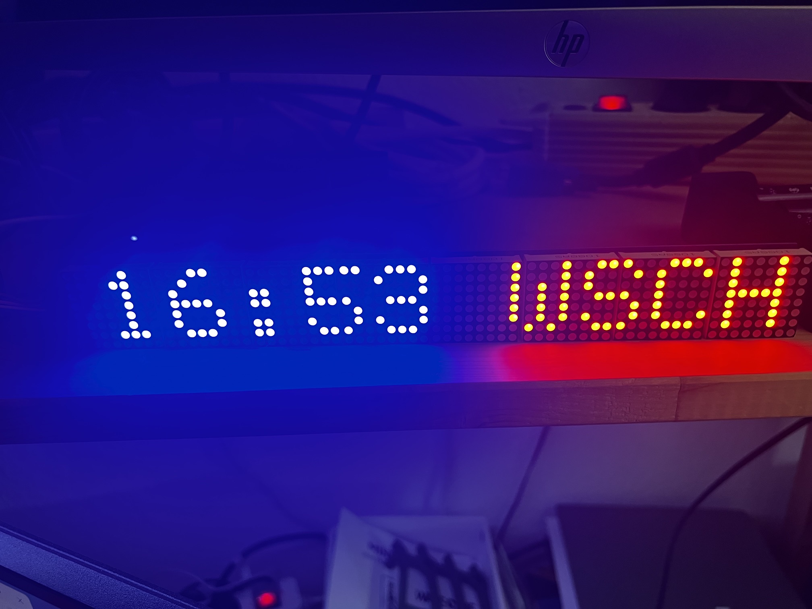
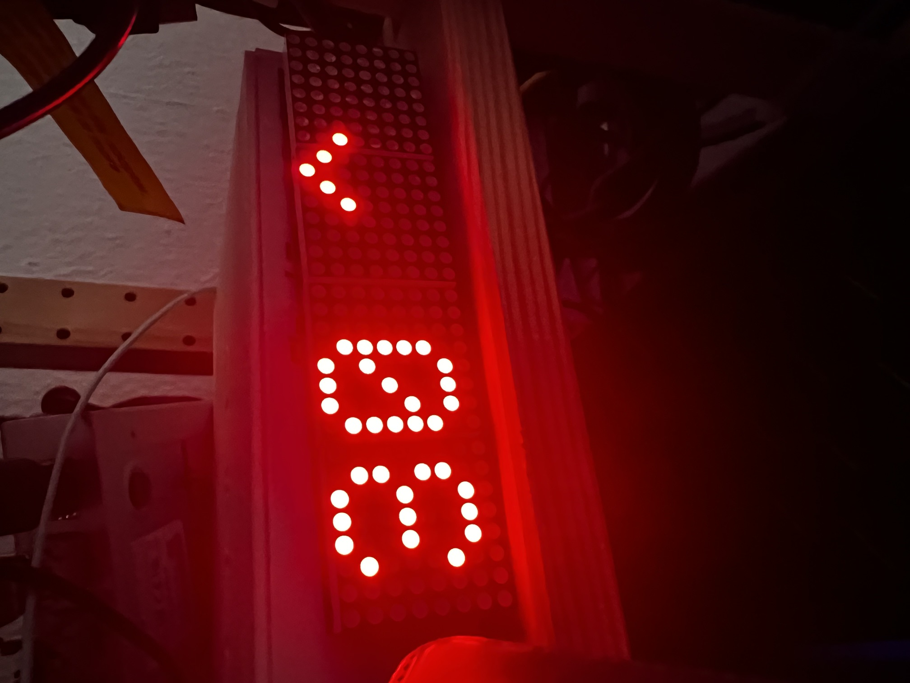
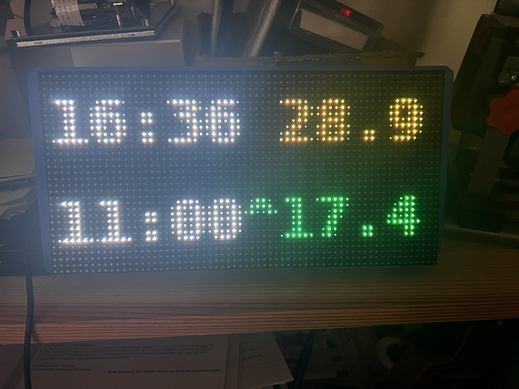
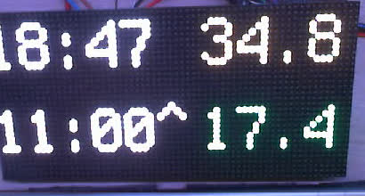

Sechs LED-Matrix-Displays im Haus, gesteuert über Tasmota, Node-RED und Home Assistant — von PV-Leistung über Alerts bis zum aktuellen Tibber-Strompreis, an zwei Standorten.
Tasmota · ESP8266 · ESP32-S3 · CircuitPython · Node-RED · Home Assistant · Raspberry PiIceMatrix steuert vier serielle MAX7219-Dot-Matrix-Displays (Matrix1–4) per Tasmota-Custom-Firmware sowie zwei technisch komplett andere HUB75-RGB-Panels (Matrix5 auf einem Raspberry Pi Zero 2W, Matrix6 auf einem ESP32-S3 mit CircuitPython) an zwei Standorten. Die eigentliche Anzeigelogik läuft konsequent in Node-RED und bezieht ihre Daten aus Home Assistant — PV-Leistung, Tibber-Strompreise, Wetter-/Katastrophenwarnungen (NINA/DWD), THW-Alarme (Divera) und Netzwerk-/Mesh-Status. Matrix5 zeigte ursprünglich TOTP/2FA-Codes an; diese Aufgabe ist komplett auf das separate Projekt Kiosk2FA umgezogen, das Panel dient seither als zahlengenaue "Tibber-Ampel" mit aktuellem Preis und nächster günstiger Zeit — Matrix6 dupliziert das an einem zweiten Standort im Haus.
4–8 seriell verkettete 32x8/64x8-Dot-Matrix-Module pro Display, angesteuert von ESP8266 (ESP-12F / Wemos D1 Mini) mit Custom-Tasmota-Firmware. Zeigen Uhrzeit, PV-Leistung, Strompreis und ein priorisiertes Alert-System.
Eigenständiges 64x32-RGB-Panel an einem Raspberry Pi Zero 2W, gesteuert per Python-Service und MQTT. Zeigt aktuellen Strompreis und die nächste günstigere Zeitperiode, farbcodiert nach Preis-Einstufung.
Identische Anzeige wie Matrix5, aber auf einem ESP32-S3 mit CircuitPython
(rgbmatrix-DMA-Treiber statt Raspberry Pi) — als wiederholbare Bauanleitung für
weitere baugleiche Displays dokumentiert.
Jedes Display hat einen eigenen Flow-Tab: Home-Assistant-Zustände werden gelesen, formatiert und per MQTT an die jeweilige Anzeige gesendet — bewusst nicht als HA-YAML-Automation, sondern einheitlich als Node-RED-Flow.
Matrix3 rotiert vierstellige Alert-Codes nach Priorität — von kritischen Warnungen (THW-Alarm, Internet offline) bis zu niedrigprioren Hinweisen (günstiger/teurer Strompreis).
flowchart LR
subgraph Quellen["Datenquellen (Home Assistant)"]
PV["PV-Leistung"]
TIB["Tibber Strompreis
(HACS tibber_prices)"]
WARN["NINA / DWD / Divera THW"]
NET["Netzwerk / Meshtastic / Petkit"]
end
Quellen --> NR["Node-RED
ein Flow-Tab je Display"]
NR -->|"MQTT: cmnd/<name>/DisplayText
cmnd/<name>/DisplayDimmer"| MQTT[("MQTT Broker
Mosquitto")]
MQTT --> TAS["Tasmota ESP8266
Matrix1-4"]
TAS --> LED1["MAX7219 Dot-Matrix-Panels"]
MQTT -->|"cmnd/Matrix5/strompreis
retained JSON"| PI["matrix5.py (systemd)
Raspberry Pi Zero 2W"]
MQTT -->|"cmnd/Matrix6/strompreis
retained JSON"| ESP["code.py
ESP32-S3 + CircuitPython"]
PI --> LED2["HUB75 RGB-Panel
Matrix5"]
ESP --> LED3["HUB75 RGB-Panel
Matrix6"]
Die Formatierungs- und Entscheidungslogik (Uhrzeitformat, PV-Watt/kWh-Umrechnung, Alert-Priorisierung, Strompreis-Einstufung günstig/normal/teuer) liegt vollständig in Node-RED. Die Endgeräte selbst sind dumm: Tasmota-ESP8266 setzen nur empfangene Textbefehle auf die MAX7219-Kette um, Pi und ESP32-S3 rendern nur das per retained MQTT-Payload gelieferte JSON auf ihr jeweiliges HUB75-Panel — die Preis-/Zeitfenster-Berechnung für Matrix5 und Matrix6 läuft identisch in Node-RED, nicht auf den Endgeräten selbst.
| Display | Module | Farbe | Controller | Funktion |
|---|---|---|---|---|
| Matrix1 (PV-Matrix) | 4x MAX7219 (32x8) | Rot | ESP-12F | PV-Leistung (Sonnenstand-basiert) |
| Matrix2 | 4x MAX7219 (32x8) | Rot | ESP-12F | Uhrzeit + PV-Leistung |
| Matrix3 | 8x MAX7219 (64x8) | 4x Rot + 4x Blau | Wemos D1 Mini | Uhrzeit + PV + Alerts |
| Matrix4 (Strompreis) | 4x MAX7219 (32x8) | Rot | Wemos D1 Mini | Tibber Strompreis + Trend |
| Matrix5 (Strompreis/Waschzeitpunkt) | 1x HUB75 64x32 | RGB | Raspberry Pi Zero 2W | Aktueller Preis + günstigste Zeit |
| Matrix6 (Strompreis/Waschzeitpunkt, 2. Standort) | 1x HUB75 64x32 | RGB | ESP32-S3 + CircuitPython | Identisch zu Matrix5, andere Hardware |
| Code | Priorität | Quelle | Beschreibung |
|---|---|---|---|
ALM! | 1 – Kritisch | Divera | THW-Alarm aktiv |
NNET | 1 – Kritisch | Netzwerk | Internet offline |
NINA | 2 – Hoch | NINA | Katastrophenwarnung |
UNWT | 2 – Hoch | DWD | Unwetterwarnung |
MESH | 3 – Mittel | Meshtastic | Neue Mesh-Nachricht |
TEUR / BIL! | 4 – Niedrig | Tibber | Strom sehr teuer / sehr günstig |





Die Standard-Tasmota-Firmware enthält keinen MAX7219-Dot-Matrix-Treiber (nur den 7-Segment-Treiber) — ohne Custom-Build leuchten alle LEDs permanent. Kurzfassung des Builds (Details siehe Repo):
pip3 install platformio
git clone --depth 1 --branch v14.4.1 https://github.com/arendst/Tasmota.git tasmota-build
cd tasmota-build
# config/tasmota/user_config_override.h nach tasmota/user_config_override.h kopieren
# erzwingt USE_DISPLAY_MAX7219_MATRIX statt des 7-Segment-Treibers
platformio run -e tasmota-displayFertige Firmware liegt außerdem als firmware/tasmota-display.bin im Repo. Die Node-RED-Flows
für Matrix1–5 sind exportiert unter config/nodered/matrix_flows.json (Matrix6 nutzt
denselben Function-Node, der zusätzliche mqtt out-Node dafür ist noch nachzuexportieren).